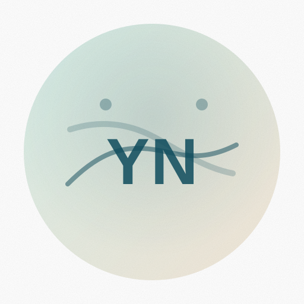

Paper / Project Title
One sentence on the problem, one on your approach. Keep this concrete: what did you build, measure, or ship?
- Tag
- Tag
- Tag
Researcher / Engineer - Topic A, Topic B, Topic C

Based in City, Country. Interested in collaboration on research and open-source.
I am a researcher/engineer focused on your focus area. My work sits at the intersection of domain 1 and domain 2, with an emphasis on building reliable systems and publishing clear, reproducible results.
Currently, I am exploring topic, topic, and topic. I enjoy projects that combine strong engineering with thoughtful evaluation.
A few papers, projects, and things I am proud of.
One sentence on the problem, one on your approach. Keep this concrete: what did you build, measure, or ship?
Describe the usefulness: what can someone do with it, and what is special about your implementation?
A short description with impact: metrics, scale, or a clear qualitative outcome.
Recent roles and responsibilities.
Degrees, programs, and relevant training.
The best way to reach me is email: you@example.com. If you are referencing a paper or repo, a link helps.